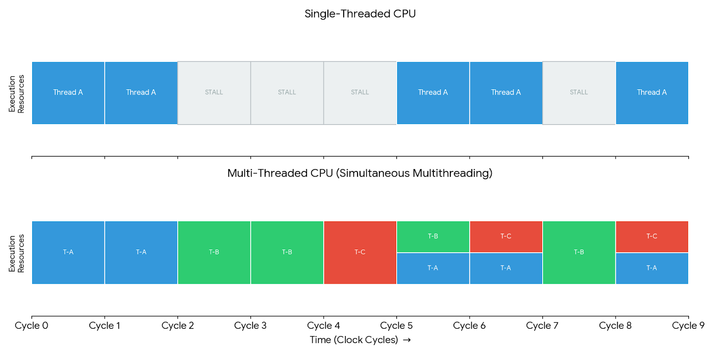
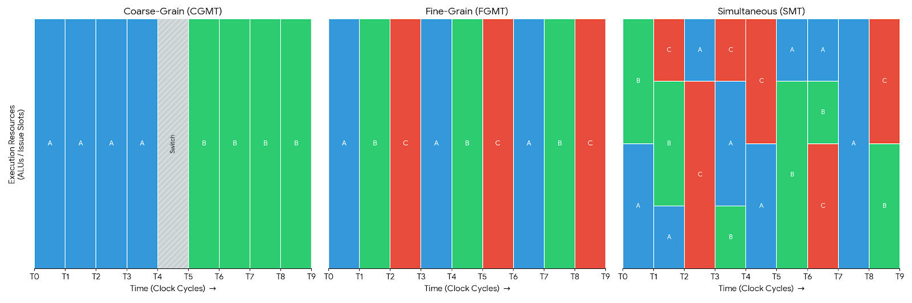
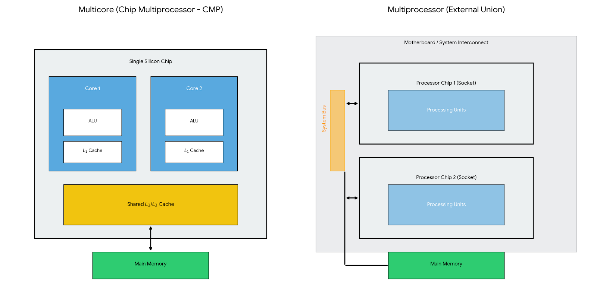
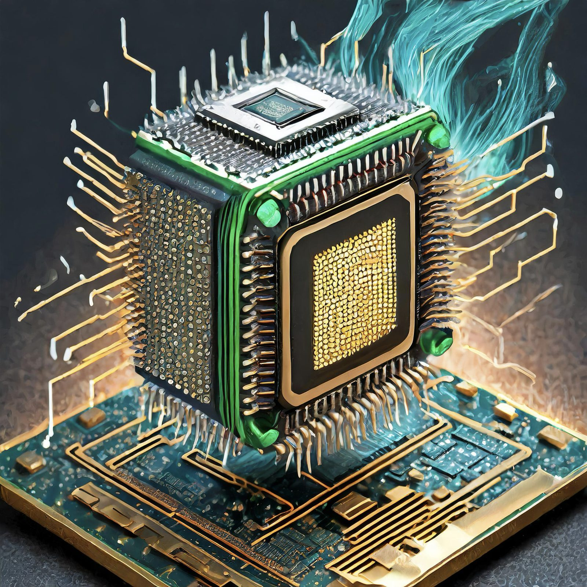

¿Qué es la Concurrencia? Origen, Propósito y Definición
1. ¿Qué es la Concurrencia?
1. ¿Qué es la Concurrencia?
Coordinar agentes en presencia de adversarios.
- Agente: hilos en un procesador, nodos en una red, entre otros.
- Coordinar: para resolver un problema (llegar a un acuerdo, usar un recurso compartido, comunicarse)
- Adversarios:
– Asincronía: Un hilo/nodo puede ser infinitamente lento y otro inifinitamente rapido.
– Fallos: Un agente puede morir (crash) o mentir y corromper (fallas bizantinas).
2. Un Poco de Historia: De la Necesidad a la Disciplina
El Origen (1961 - Atlas Computer)
2. Un Poco de Historia: De la Necesidad a la Disciplina
El Origen (1961 - Atlas Computer)
La concurrencia nació bajo el nombre de Multiprogramming en la computadora Atlas en Manchester. En aquel entonces, "Distribuido" y "Concurrente" eran términos intercambiables.
- Objetivo original: No era ir más rápido, sino no desperdiciar el CPU. Mientras un proceso esperaba por la lectura de una cinta magnética (I/O), el CPU saltaba a otro proceso.

La Evolución Forzada (El fin de la fiesta del silicio)
La Evolución Forzada (El fin de la fiesta del silicio)
¿Por qué hoy todos los programadores deben saber concurrencia? Porque chocamos contra tres muros físicos:
- Power Wall: No pudimos aumentar más la frecuencia de reloj sin derretir los chips (No existen maquinas 100% eficiencientes).
- Auge de las Redes de Computadoras: Redes Celulares como 4G, 5G, redes inalambricas como BT, WiFi, tecnologias de IoT y la necesidad de distribuir la informacion.
- Entre mayor trabajo paralelizable exista en un problema, más veloz será su cómputo (Ley de Amdahl), sin embargo, no todos los problemas se pueden paralelizar fácilmente.
¿Multicore, Multiprocesador y Multihilo?
¿Multicore, Multiprocesador y Multihilo?
Aunque a menudo se confunden, representan distintos niveles de integración y formas de gestionar los recursos del hardware.
– A. Multihilo (Multithreading): La eficiencia dentro del núcleo
El multihilo busca que un solo procesador físico no se quede ocioso. Para lograrlo, el procesador mantiene múltiples Hardware Contexts (Contextos de Hardware).
- Hardware Context: Es el conjunto mínimo de recursos necesarios para representar el estado de ejecución de un hilo. Incluye principalmente el Program Counter (PC) y el conjunto de registros (datos temporales). No incluye la memoria ni las unidades de ejecución (ALU), que son compartidas.
- Multihilo de Grano Fino (Fine-grained - 1982): Los hilos alternan su ejecución ciclo a ciclo (como un turno rotatorio). Mientras un hilo espera un dato de memoria, el otro ocupa el pipeline.
Ejemplo: Denelcor HEP (1982) y más tarde el Tera MTA (1990).
<<<<<<< HEAD
- Multihilo Simultáneo (SMT - 2002): Es la evolución donde las instrucciones de varios hilos pueden estar en la ALU al mismo tiempo en un solo ciclo de reloj.
¿Por qué no se podía antes? Antes de SMT, la lógica de despacho (issue logic) del procesador estaba diseñada para seleccionar instrucciones de un solo hilo por ciclo. Aunque hubiera varios contextos de hardware, el "embudo" del pipeline solo aceptaba un flujo a la vez. SMT rediseñó esta lógica para mezclar instrucciones de distintos hilos y llenar los huecos de las unidades de ejecución.
Ejemplo: Intel Pentium 4 con Hyper-Threading (2002).
– B. Multicore (Chip Multiprocessor o CMP): Duplicar el motor
En lugar de compartir una sola ALU entre varios hilos, el Multicore coloca varios núcleos completos e independientes dentro de un mismo chip de silicio.
- Estructura: Cada núcleo es una CPU completa con sus propias ALUs y su propia caché de primer nivel (L1).
- Punto de Unión: La unión de estos núcleos suele ocurrir en la Caché L2 o L3 compartida y en el bus de acceso a la memoria principal.
- Evolución: Surgió cuando el Power Wall impidió seguir subiendo la velocidad de un solo núcleo. Era más eficiente poner dos núcleos "lentos" que uno solo "muy caliente".
Ejemplo: IBM Power4 (2001), el primer procesador de doble núcleo en un solo chip de alto rendimiento.
<<<<<<< HEAD
– C. Multiprocesador: La unión externa
Es el nivel más alto de escala. Se refiere a tener múltiples chips físicos (sockets) instalados en una misma placa base o interconectados en una red.
Diferencia clave: Mientras que en el Multicore la comunicación entre núcleos es rapidísima porque están en el mismo silicio, en un Multiprocesador tradicional la comunicación viaja por cables o pistas de la placa base, lo que introduce más latencia.
| Arquitectura | Fecha Aprox. | Ejemplo de Máquina | Cambio en ALU | Cambio en CPU | Gestión de Caché | Punto de Unión |
|---|---|---|---|---|---|---|
| Coarse-Grain | 1954 / 1964 | CDC 6600 | Compartida | 1 core, 1 hilo activo | Compartida | Pipeline (Latencia larga) |
| Fine-Grain | 1982 | Denelcor HEP | Compartida | 1 core, hilos rotan por ciclo | Compartida | Pipeline (Ciclo a ciclo) |
| SMT | 2002 | Pentium 4 (HT) | Compartida simultáneamente | 1 core físico, 2+ lógicos | Compartida (L1, L2, L3) | Lógica de Despacho (Issue) |
| Multicore (CMP) | 2001 | IBM Power4 | Duplicada (1 por núcleo) | Múltiples núcleos en 1 chip | L1 privada, L2/L3 compartida | Bus interno / Caché L2-L3 |
| Multiprocesador | Años 90/00 | Sun Enterprise | Independiente | Múltiples chips físicos | Totalmente independientes | Bus de Sistema / Red |
| Híbrido Moderno | 2004 - Hoy | IBM Power5 / Intel Nehalem | Duplicada por core, compartida por SMT | N núcleos con N hilos cada uno | Jerarquía multinivel (L1-L3) | Interconectores (Mesh/Ring) |
Resumen de cambios técnicos:
ALU: En SMT se maximiza su uso (varios hilos la usan a la vez); en Multicore se desperdicia espacio pero se gana independencia.
CPU: Evoluciona de ser una unidad secuencial a ser un "virtualizador" de hardware (SMT) y finalmente una colección de motores independientes (Multicore).
Cachés: A medida que avanzamos, la caché se vuelve más compleja. En multicore, se requiere coherencia de caché para que todos los núcleos vean los mismos datos, lo cual no era un problema en las arquitecturas puras de un solo núcleo.
3. La relación entre el Cómputo Concurrente, Paralelo y Distribuido
3. La relación entre el Cómputo Concurrente, Paralelo y Distribuido
A distributed system is one in which the failure of a computer you didn't even know existed can render your own computer unusable.
A menudo se enseña que Paralelo, Concurrente y Distribuido son cosas distintas, se cree que el concurrente se refiere a la programación en multicores, y el distribuido a la resolución de problemas en redes distribuidas. Sin embargo, Sergio Rajsbaum y Michel Raynal argumentan que el término de concurrencia engloba a las dos perspectivas, siendo concurrente el estudio del entrelazado de ejecuciones secuenciales, es decir, estudiamos las diferentes ejecuciones que surgen cuando dos o más agentes ejecutan algoritmos secuenciales al mismo tiempo.
La Diferencia de Enfoque
La Diferencia de Enfoque
- Cómputo Paralelo: Busca Eficiencia. Es un entorno "amigable" donde dividimos una tarea para terminar antes (ej. multiplicar matrices).
- Cómputo Distribuido: Busca Coordinación. Es un entorno "hostil" donde hay que sobrevivir a fallos, asincronía y falta de un reloj global.
 =======
=======

>>>>>>> c0a4ba9 (bib, images and intructions about zip)